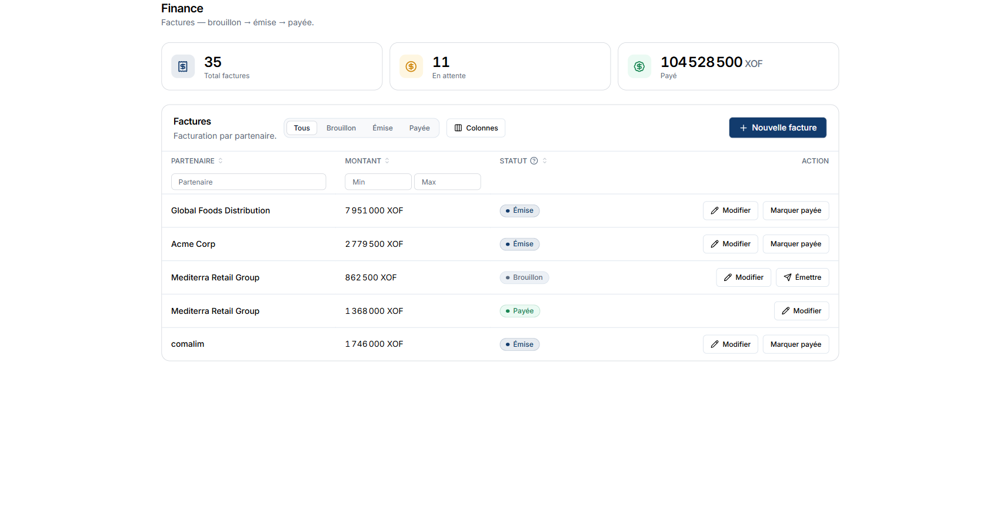
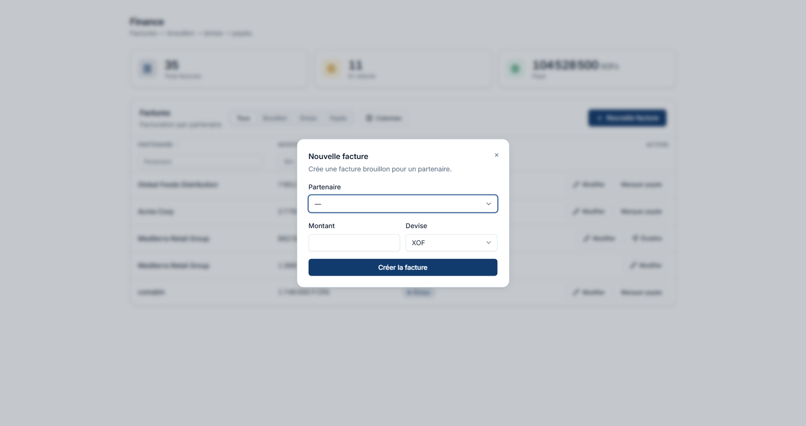

Avant tout le reste : une facture passe toujours par trois étapes, dans cet ordre.
Dans le menu à gauche : COMMERCE → Finance

123
Émise (bleu) : la facture est partie chez le client. Il doit payer.
Brouillon (gris) : la facture est commencée, mais pas encore envoyée.
Vous pouvez encore tout changer.
Payée (vert) : le client a donné l'argent. C'est fini.
C'est réussi quand…
Vous savez dire, en regardant la couleur, où en est chaque facture.
Tâche 2
Faire une nouvelle facture
Quand un client a reçu sa marchandise et doit payer.
Dans le menu à gauche : COMMERCE → Finance
1
Cliquez le bouton bleu foncé Nouvelle facture, en haut à droite.
Une fenêtre s'ouvre au milieu de l'écran :

234
Partenaire : choisissez le client qui doit payer.
Montant : écrivez la somme, en chiffres, sans espace.
Cliquez Créer la facture. Elle est enregistrée en Brouillon.
Attention
La case Devise doit rester sur XOF, la monnaie du pays.
N'y touchez pas si vous n'êtes pas sûr.
C'est réussi quand…
La facture apparaît dans la liste avec l'étiquette grise Brouillon.
Tâche 3
Émettre la facture
« Émettre » veut dire : la facture est finie et part chez le client.
Dans le menu à gauche : COMMERCE → Finance
1
Sur la ligne d'une facture en Brouillon, cliquez Émettre.
Attention
Vérifiez bien le nom du client et le montant AVANT de cliquer.
Une fois émise, la facture est partie chez le client et compte dans la comptabilité.
C'est réussi quand…
L'étiquette passe de Brouillon (gris) à Émise (bleu),
et le bouton Marquer payée apparaît à la place.
Tâche 4
Noter qu'une facture est payée
Le jour où le client apporte l'argent.
Dans le menu à gauche : COMMERCE → Finance
1
Sur la ligne de la facture, cliquez Marquer payée.
Attention
Ne cliquez Marquer payée que lorsque l'argent est réellement arrivé.
C'est ce bouton qui dit à la comptabilité que la dette du client est effacée.
C'est réussi quand…
L'étiquette devient verte : Payée. Il n'y a plus de bouton d'action sur la ligne.
Tâche 5
Retrouver les factures pas encore payées
Pour savoir qui vous doit encore de l'argent, et combien.
Dans le menu à gauche : COMMERCE → Finance
12
Le chiffre En attente, en haut, compte les factures qui ne sont pas payées.
Cliquez le bouton Émise : la liste ne montre plus que ces factures-là.
C'est réussi quand…
Toutes les lignes affichées portent l'étiquette bleue Émise.